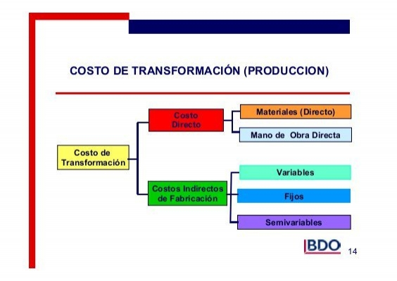

Costo de transformación
Los costos de transformación de los inventarios o costos de producción, son aquellos en los cuales la entidad incurre desde la adquisición del mismo hasta que el inventario se encuentra en las condiciones para ser vendido por parte de la entidad. Los costos de transformación incluyen aquellos costos directamente relacionados con las unidades producidas y comprende: Mano de obra (MOD), Materia prima (MPD), Costos indirectos de fabricación (CIF).
